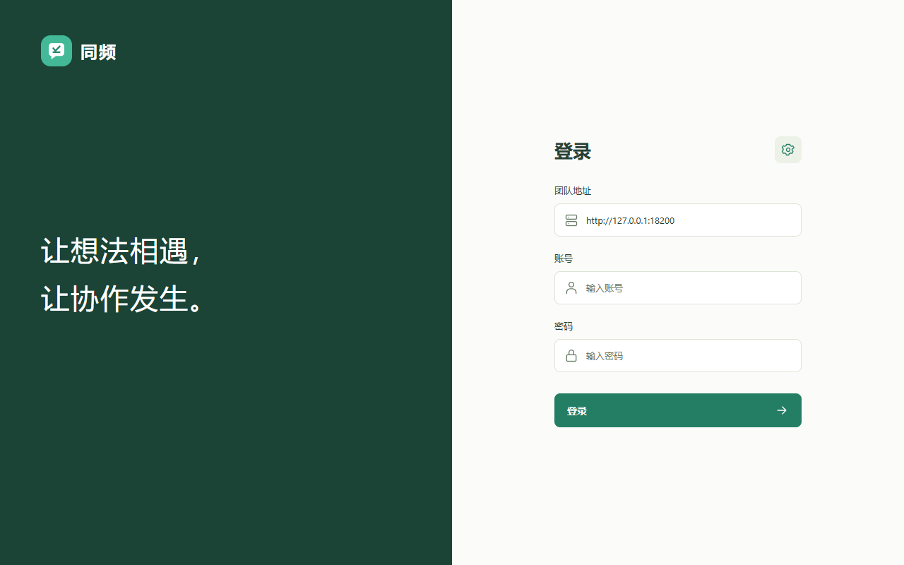
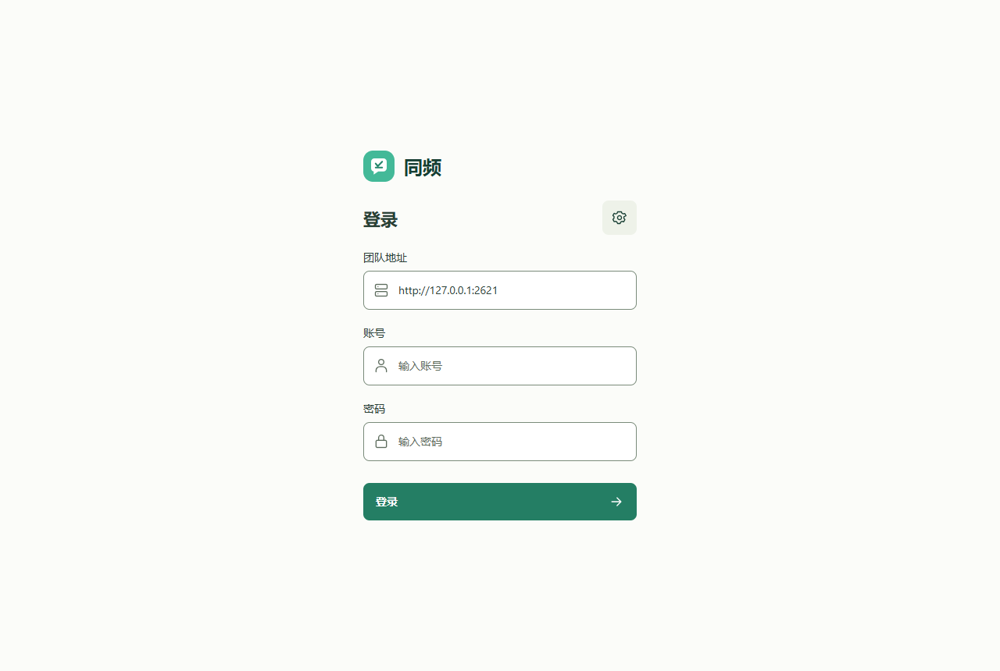

紧凑登录
移除半屏标语，品牌与登录表单集中呈现。


点击截图可打开原尺寸图。登录地址是隔离测试服务的临时本机地址，不是生产部署地址。只有登录页提供真实前后对照，聊天页没有伪造旧版截图。
v0.1.2 新版界面。当前代码的真实浏览器截图，消息与账号均为合成演示数据。
移除半屏标语，品牌与登录表单集中呈现。


点击截图可打开原尺寸图。登录地址是隔离测试服务的临时本机地址，不是生产部署地址。只有登录页提供真实前后对照，聊天页没有伪造旧版截图。